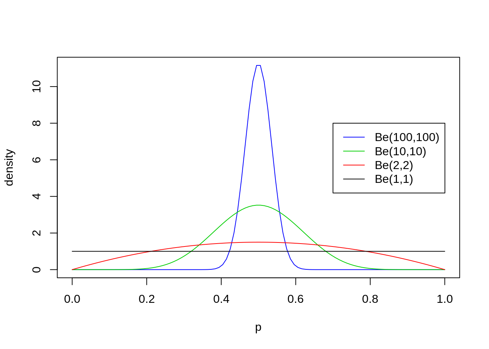
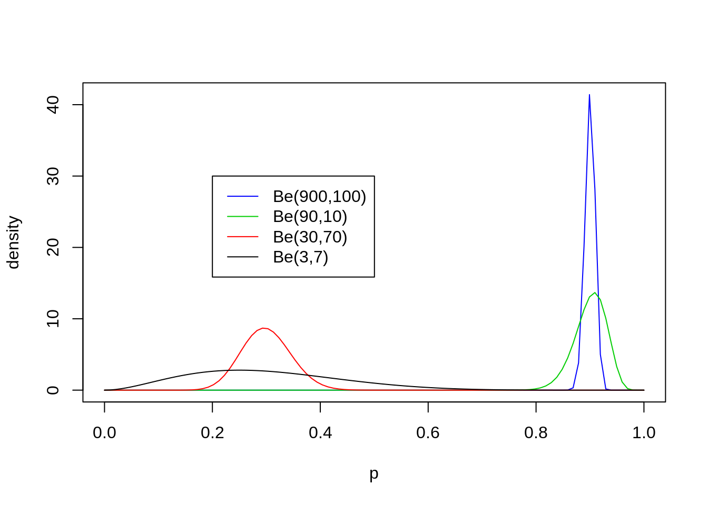
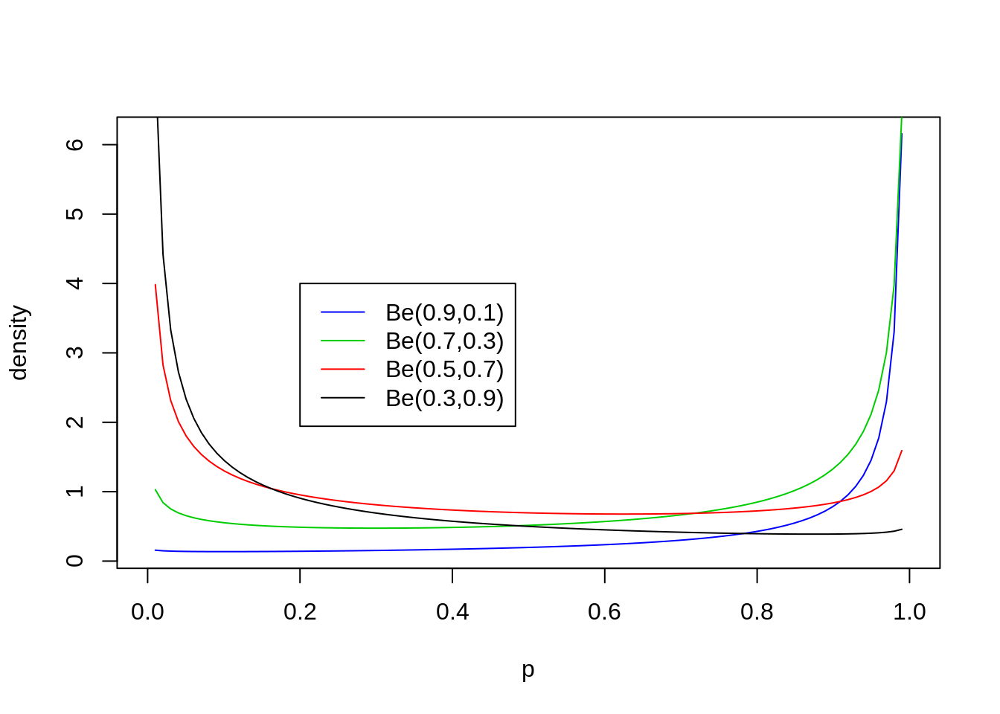
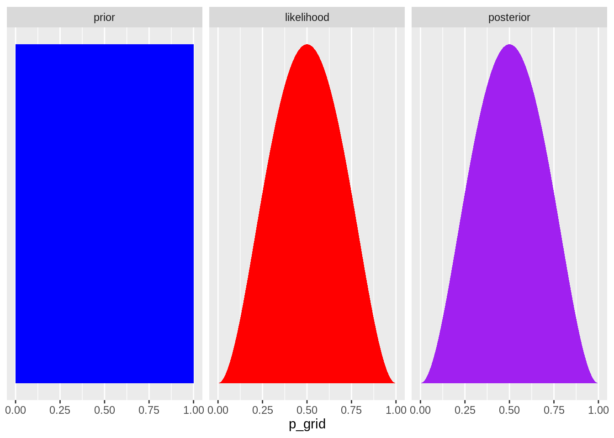

Chapter 2 Model Implementation (Ulu and Smith (2009) - Part2.1 )
2.1 Importing the required library
library(tidyverse)## ── Attaching packages ── tidyverse 1.3.0.9000 ──## ✓ ggplot2 3.3.2 ✓ purrr 0.3.4
## ✓ tibble 3.0.3 ✓ dplyr 1.0.1
## ✓ tidyr 1.1.1 ✓ stringr 1.4.0
## ✓ readr 1.3.1 ✓ forcats 0.5.0## ── Conflicts ────────── tidyverse_conflicts() ──
## x dplyr::filter() masks stats::filter()
## x dplyr::lag() masks stats::lag()2.2 Model parameters definition
\(\theta:\)
the Net Present Value of Stream of benefits
If she decides to reject the technology, she receives nothing and no longer gathers information about the technology.
If she decides to adopt the technology, she pays a fixed adoption cost K and receives a net expected benefit:
\[\int_{\theta} \theta \pi(\theta)d\theta - K\]
\(\theta\) has the density \(\pi\).
- Now, if consumer choose to gather additional information, she pays c in that period and observe the signal x, drawn with likelihood function
\[L(x|\theta)\]
Having observed signal x, the consumer then updates her prior \(\pi\) using Baye’s rule:
\[\prod(\theta;\pi,x) = \frac{L(x|\theta)\pi(\theta)}{f(x;\pi)} \]
where the f(x;\(\pi\)) is the predictive ditribution for signals x,
\[f(x;\pi) =\int_{\theta} L(x|\theta)\pi(\theta)d\theta\]
The consumer then continues into the next period, starting with a new prior distribution that is equal to her posterior distribution from this stage.
Because our dynamic programming state variable is distribution itself , we will frequently supress the domain of the distribution and write the posterior as
The consumer’s optimal value function with k periods remaining
\[v^{*}_{0}(\pi) = 0\] \[v^{*}_{k}(\pi)=max(0,\int_{\theta}\theta\pi(\theta) \theta -K , -c + \delta E[v^{*}_{k-1}(\Pi(\pi,x))])\]
where \(\delta\) (0<\(\delta\)<1) is the discount factor and the expectation of the next period value function is taken over all possible random signals.
\[E[v^{*}_{k-1}(\Pi(\pi, \tilde{x})]=\int_{x}v_{k-1}{*}(\Pi(\pi,x))f(x;\pi)dx\]
2.3 Part 2.1-Example of @Ulu and Smith (2009)
The model for \(\theta\) is defined as:
\[\theta=Ap^*\] Consumer’s uncertainty about \(p*\) has a beta distribution
\[f(p^*) = \frac{\Gamma(\alpha + \beta)}{\Gamma(\alpha)\Gamma(\beta)}(p^*)^{\alpha-1}(1-p^*)^{\beta-1}\] ### Discussion on Beta Distribiution:
The pdf of the beta distribution, for 0<\(p*\)<1, and shape parameters \(\alpha\),\(\beta\)>0, is a power function of the variable x and of its reflection (1-x) as follows:
\[f(x|\alpha,\beta) = constant.x^{\alpha-1}(1-x)^{\beta-1}\] \[=\frac{x^{\alpha-1}(1-x)^{\beta-1}}{\int_{0}^{1}u^{\alpha-1}(1-u)^{\beta-1}du}\] \[=\frac{\Gamma(\alpha + \beta)}{\Gamma(\alpha)\Gamma(\beta)}x^{\alpha-1}(1-x)^{\beta-1}\] \[= \frac{1}{B(\alpha,\beta)}x^{\alpha-1}(1-x)^{\beta-1}\] The beta function, B is a normalization constant to ensure that the total probability is 1.
2.3.1 Example of Beta Distribution:
Example:
2.3.1.1 equal alpha and beta:
p = seq(0,1,length.out = 100)
plot(p,dbeta(p,100,100),ylab = "density", type="l", col=4)
lines(p,dbeta(p,10,10), type = "l", col=3)
lines(p,dbeta(p,2,2), type = "l", col=2)
lines(p,dbeta(p,1,1), type = "l", col=1)
legend(0.7,8, c("Be(100,100)","Be(10,10)","Be(2,2)", "Be(1,1)"),col=c(4,3,2,1), lty = c(1,1,1,1) ) #### non-equal alpha and beta:
p = seq(0,1, length=100)
plot(p, dbeta(p, 900, 100), ylab="density", type ="l", col=4)
lines(p, dbeta(p, 90, 10), type ="l", col=3)
lines(p, dbeta(p, 30, 70), col=2)
lines(p, dbeta(p, 3, 7), col=1)
legend(0.2,30, c("Be(900,100)","Be(90,10)","Be(30,70)", "Be(3,7)"),lty=c(1,1,1,1),col=c(4,3,2,1))
Two points about the Beta distribution:
From these examples you should note the following: \[E[p]=\frac{\alpha}{\alpha+\beta}\] * It turns out that the mean is exactly Thus the mean of the distribution is determined by the relative values of a and b.
- The larger the values of a and b, the smaller the variance of the distribution about the mean.
\[Var[p]=E[(X-\mu)^2]=\frac{\alpha\beta}{(\alpha+\beta)^2(\alpha+\beta+1)}\]
2.3.1.2 alpha and beta <1
p = seq(0,1, length=100)
plot(p, dbeta(p, 0.9, 0.1), ylab="density", type ="l", col=4)
lines(p, dbeta(p, 0.7, 0.3), type ="l", col=3)
lines(p, dbeta(p, 0.5, 0.7), col=2)
lines(p, dbeta(p, 0.3, 0.9), col=1)
legend(0.2,4, c("Be(0.9,0.1)","Be(0.7,0.3)","Be(0.5,0.7)", "Be(0.3,0.9)"), col=c(4,3,2,1), lty=c(1,1,1,1))
2.4 Beta Conjugate to Bernoulli Distibutaion
2.4.1 Prior:
\[Beta(\alpha,\beta) = \frac{\theta^{\alpha-1}(1-\theta)^{\beta-1}}{B(\alpha,\beta)}\]
\[= const.\theta^{\alpha-1}(1-\theta)^{b-1}\]
2.4.2 Posterior Distribution:
\[P(\theta|data)=\frac{P(data|\theta)P(\theta)}{P(data)}\propto P(data|\theta)P(theta)\]
2.5 Beta-Binomial Model
2.5.1 Likelihood:
\[P(data|\theta) \propto \theta^z(1-\theta)^{n-z},\] if we let z number of \(x_{i}\) with value 1, i.e, (seeing z success in n trial)
\[z=\sum_{i=1}^{n}X_i\]
2.5.2 Derive Posterior
\[P(\theta|data) \propto ( \theta^z(1-\theta)^{n-z})(\theta^{\alpha-1}(1-\theta)^{\beta-1})\]
\[\propto \theta^{z+\alpha-1}(1-\alpha)^{n-z+\beta-1}\]
Subsituing the following:
\[\alpha'=\alpha + z\] \[\beta'=n+\beta-z\] Now we have posterior:
\[P(\theta | data) = \frac{\theta^{\alpha'-1}(1-\alpha)^{\beta'-1}}{B(\alpha',\beta')}\]
\[=Beta(\alpha',\beta')\]
2.6 Example of the Ulu and Smith (2009):
2.6.1 Prior
Beta with \(\alpha\)=1, \(\beta\)=1:
N <- 1000
alpha <- 1
beta <- 1
nsuccess <- 2
n_trials <- 4
data_1_1 <- tibble(p_grid = seq(from=0, to =1, length.out = N)) %>%
mutate(prior=dbeta(p_grid,alpha,beta)) %>%
mutate(likelihood = dbinom(nsuccess, size = n_trials, prob = p_grid)) %>%
mutate(posterior = (likelihood * prior) / sum(likelihood * prior))data_1_1 %>%
gather(key, value, -p_grid) %>%
# this line allows us to dictate the order the panels will appear in
mutate(key = factor(key, levels = c("prior", "likelihood", "posterior"))) %>%
ggplot(aes(x = p_grid, ymin = 0, ymax = value, fill = key)) +
geom_ribbon() +
scale_fill_manual(values = c("blue", "red", "purple")) +
scale_y_continuous(NULL, breaks = NULL) +
theme(legend.position = "none") +
facet_wrap(~key, scales = "free")
Analytically, the mean of the posterior should be:
\[Beta(\alpha + s, \beta + n -s)\] with mean value of
\[E[X]=\frac{\alpha + s}{\alpha + \beta + n}\] having \(\alpha\)=1, \(\beta=1\), \(s\)=2 and \(n\)=4 :
\[Beta(1 + 2, 1+ 4-2)\] \[Beta(3, 3)\] with mean value of
\[E[pgrid]=\frac{3}{3+6}=\frac{1}{3}\]
2.7 Normal-Normal Conjugate:
\[P(\theta | Data) = \frac{P(Data|\theta)P(\theta)}{P(Data)} \propto P(Data|\theta)P(\theta)\] \[P(Data|\theta) = \prod_{i=1}^{N}\frac{1}{\sqrt{2\pi\sigma_x^2}}exp(-\frac{(x_i-\theta)²}{2\sigma_x^2})\] \[\propto exp(-\frac{\sum_{i=1}^{N}(x_i-\theta)^2}{2\sigma_x^2})\] Now posterior:
\[P(\theta|X) \propto exp(-\frac{\sum_{i=1}^{N}(x_i-\theta)^2}{2\sigma_x^2})exp(-\frac{(\theta-\theta_0)^2}{2\sigma_{\theta}^2})\]
\[=exp[-\]
You can label chapter and section titles using {#label} after them, e.g., we can reference Chapter ??. If you do not manually label them, there will be automatic labels anyway, e.g., Chapter 4.
Figures and tables with captions will be placed in figure and table environments, respectively.
par(mar = c(4, 4, .1, .1))
plot(pressure, type = 'b', pch = 19)
Figure 2.1: Here is a nice figure!
Reference a figure by its code chunk label with the fig: prefix, e.g., see Figure 2.1. Similarly, you can reference tables generated from knitr::kable(), e.g., see Table 2.1.
knitr::kable(
head(iris, 20), caption = 'Here is a nice table!',
booktabs = TRUE
)| Sepal.Length | Sepal.Width | Petal.Length | Petal.Width | Species |
|---|---|---|---|---|
| 5.1 | 3.5 | 1.4 | 0.2 | setosa |
| 4.9 | 3.0 | 1.4 | 0.2 | setosa |
| 4.7 | 3.2 | 1.3 | 0.2 | setosa |
| 4.6 | 3.1 | 1.5 | 0.2 | setosa |
| 5.0 | 3.6 | 1.4 | 0.2 | setosa |
| 5.4 | 3.9 | 1.7 | 0.4 | setosa |
| 4.6 | 3.4 | 1.4 | 0.3 | setosa |
| 5.0 | 3.4 | 1.5 | 0.2 | setosa |
| 4.4 | 2.9 | 1.4 | 0.2 | setosa |
| 4.9 | 3.1 | 1.5 | 0.1 | setosa |
| 5.4 | 3.7 | 1.5 | 0.2 | setosa |
| 4.8 | 3.4 | 1.6 | 0.2 | setosa |
| 4.8 | 3.0 | 1.4 | 0.1 | setosa |
| 4.3 | 3.0 | 1.1 | 0.1 | setosa |
| 5.8 | 4.0 | 1.2 | 0.2 | setosa |
| 5.7 | 4.4 | 1.5 | 0.4 | setosa |
| 5.4 | 3.9 | 1.3 | 0.4 | setosa |
| 5.1 | 3.5 | 1.4 | 0.3 | setosa |
| 5.7 | 3.8 | 1.7 | 0.3 | setosa |
| 5.1 | 3.8 | 1.5 | 0.3 | setosa |
You can write citations, too. For example, we are using the bookdown package (Xie 2020) in this sample book, which was built on top of R Markdown and knitr (???). change new line
References
Ulu, Canan, and James E. Smith. 2009. “Uncertainty, Information Acquisition, and Technology Adoption.” Operations Research 57 (3): 740–52. https://doi.org/10.1287/opre.1080.0611.
Xie, Yihui. 2020. Bookdown: Authoring Books and Technical Documents with R Markdown. https://github.com/rstudio/bookdown.